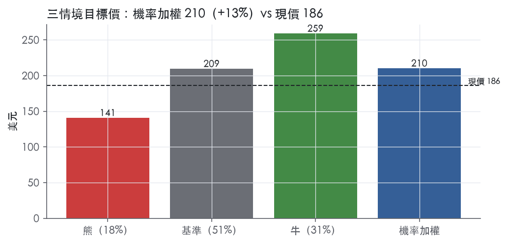
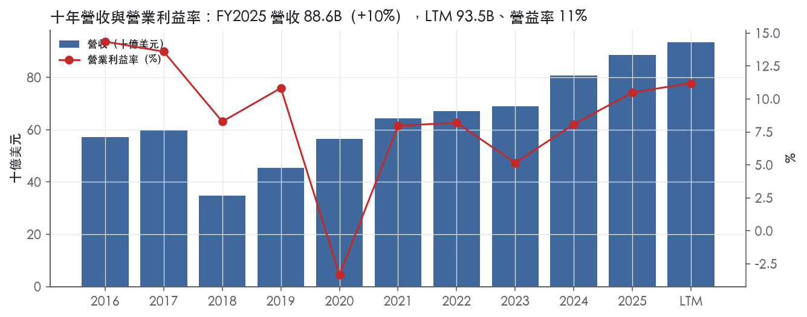
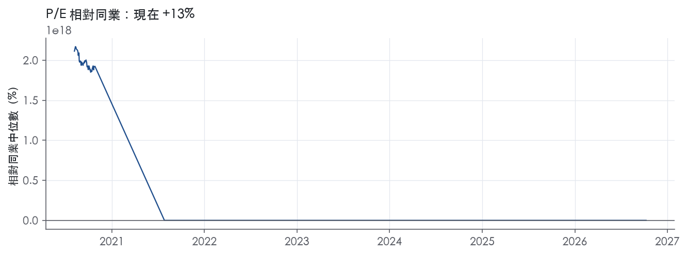
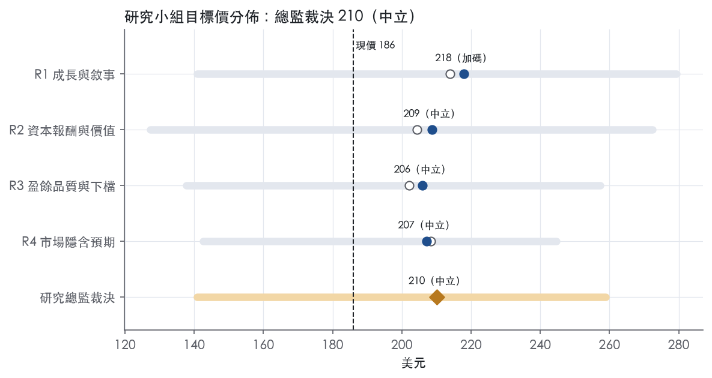
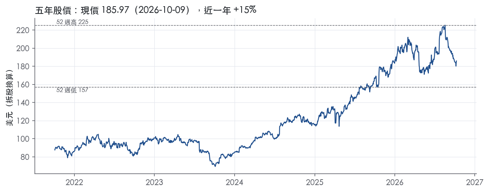

評等總表 › 工業 › RTX
盈餘高於基準、倍數持平，中性｜評等 中立｜目標價 210
| 評等 | 中立（邊界，鄰近加碼） |
| 12 個月目標價 | 210 美元 |
| 現價 | 185.97 美元（2026-10-09） |
| 預期報酬 | 股價 +13.0%＋股息 1.5%＝總報酬 +14.5%；同業籃門檻 9.8%，超額 +4.7% |
| 估值方法 | P/E 27.0x，套在第 5–8 季的EPS（也就是一年後的未來四季） |
| 三情境 | 熊 141／基準 209／牛 259 |
| 研究流程 | 四位研究員兩輪辯論＋研究總監裁決 |
| 資料來源 | SEC EDGAR XBRL、Tiingo、FRED（全免費） |
盈餘高於基準、倍數持平，中性（研究總監裁決，四位研究員兩輪辯論後）
評等 中立（邊界，鄰近加碼）｜12 個月目標價 210 美元（總監三情境機率加權 212 與研究員中位數 208 各半）｜現價 185.97（2026-10-09）
預期報酬：股價 +13.0%＋股息 1.5%＝總報酬 +14.5%。同業籃門檻 9.8%，超額 +4.7%，離加碼的分界不到三個百分點，屬邊界評等（落在其他級距的機率約五成）。
估值方法：P/E 27.0x，套在第 5–8 季的EPS（也就是一年後的未來四季）。三情境：熊 141（18%）／基準 209（51%）／牛 259（31%）。
什麼會讓研究總監改變看法：Q3財報三度上修FY2026指引或FY2027指引兩位數有機成長，我上調y1並把倍數移向P75；新GTF／AOG揭露、FFP負向累計調整或P&W調整後ROS跌破8.0%，我提高熊情境機率並下修營益率路徑。
| 過去四季（實際，FY2026Q2） | 未來四季 | 第 5–8 季 | 第 9–12 季 | |
|---|---|---|---|---|
| 營收（B） | 93.5B | 100.0B | 108.5B | 115.6B |
| 營收成長 | 11.8% | 7.0% | 8.5% | 6.5% |
| 營業利益率 | 11.2% | 11.6% | 11.9% | 12.2% |
| EPS（美元） | 5.69 | 6.97 | 7.76 | 8.47 |
| EPS 成長 | 24.9% | 22.6% | 11.3% | 9.2% |
| 每股股息（美元） | 2.82 | 2.82 | 2.82 | 2.82 |
| P/E（現價） | 32.7x | 26.7x | 24.0x | 22.0x |
| 股息殖利率（現價） | 1.5% | 1.5% | 1.5% | 1.5% |
過去四季為申報數字；預測為研究總監的假設、程式計算。倍數與殖利率都用現價計算，用來看現價對應各期獲利的高低。
| 情境 | 機率（歷史） | 故事 | 未來四季營收成長 | 第 5–8 季營益率 | 倍數 | 目標價 | 股價漲跌 |
|---|---|---|---|---|---|---|---|
| 熊 | 18%（17%） | 對應風險表第1條GTF／PW1100品質事件重演與第3條FFP開發合約累計調整，NTM內一次認列後部分恢復，倍數到前瞻帶P10 | 5.0% | 10.3% | 22.5x | 141 | -24.3% |
| 基準 | 51%（51%） | 下半年依指引放緩、2027年起積壓轉化回升、三分部利潤率每年約30bp墊高、股數持平、倍數不重評 | 7.0% | 11.9% | 27.0x | 209 | 12.6% |
| 牛 | 31%（32%） | Q3再上修指引、FY2027指引兩位數、P&W售後延續高成長與Patriot組合改善，ROIC逼近資本成本，倍數到前瞻帶P75 | 10.0% | 12.7% | 30.0x | 259 | 39.2% |
目標價由程式依研究總監的驅動與倍數計算；機率由研究總監給定。括號內是歷史頻率：把這檔股票過去十年 12 個月報酬的波動形狀，置中在基準情境，結果落在各情境附近的比例。

四位研究員用不同方法各自估值，回應研究總監的質疑後交出第二輪，最後由總監逐點裁決。各研究員的主張見第七章，裁決理由見第八章，完整論證見《研究底稿》。
| 立場（一輪→二輪） | 加權目標價（一輪→二輪） | 評等（一輪→二輪） | 第二輪倍數 | 熊～牛目標價 | |
|---|---|---|---|---|---|
| R1 成長與敘事 | 看多→看多 | 214→218 | 加碼→加碼 | 28.0x | 141～279 |
| R2 資本報酬與價值 | 中性→中性 | 204→209 | 中立→中立 | 27.0x | 127～272 |
| R3 盈餘品質與下檔 | 中性→中性 | 202→206 | 中立→中立 | 26.0x | 138～257 |
| R4 市場隱含預期 | 中性→中性 | 208→207 | 中立→中立 | 26.7x | 143～245 |
| 研究總監裁決 | 中性 | 210 | 中立 | 27.0x | 141～259 |
目標價由程式依各自的驅動與倍數計算；評等＝機率加權總報酬 − 同業籃門檻。
RTX 是一家航太與國防公司，為商用、軍用與政府客戶提供先進系統與服務¹。公司服務航太產業的原廠設備與售後維修零件及服務兩大領域的商用與政府客戶¹；國防業務則以主承包商或分包商身分，為軍方與政府客戶執行一系列國防相關計畫，涵蓋美國本土及國際客戶¹。RTX Corporation 於 1934 年在德拉瓦州註冊成立¹。客戶結構上美國政府是最大單一客戶，國防銷售的絕大多數來自美國政府¹。本質上這是一家靠民航售後維修現金流撐住、靠國防訂單堆高積壓的雙軌公司。
RTX 分為三大業務分部：Collins Aerospace、Pratt & Whitney、Raytheon，各自涵蓋性質相近的業務群¹。Collins Aerospace 是全球領先的先進航太與國防產品供應商，產品線涵蓋電力系統、環控系統、飛控系統、起落架與煞車系統、航電、內裝與座艙系統，以及民航與軍用售後維修服務¹；Collins 最大商用客戶為波音與空巴，兩者合計占 2025、2024、2023 年 Collins 分部銷售的 16%、16%、19%¹。Pratt & Whitney 是全球主要飛機發動機供應商之一，產品涵蓋寬體機、窄體機、區間客機大型發動機，以及軍用戰機、轟炸機、加油機、運輸機發動機，另有小型發動機與輔助動力裝置業務¹；其最大商用客戶空巴占 2025、2024、2023 年該分部銷售的 29%、31%、48%，依賴度在三個分部中最高¹。GTF 系列發動機已裝載超過 2,600 架飛機、服務逾 90 家營運商，涵蓋空巴 A320neo、A220 與 Embraer E2 三個平台¹；GTF 售後維修網絡已擴至全球 21 座設施，2025 年 PW1100G-JM 進廠維修產出年增約 26%¹。Raytheon 是防禦與攻擊性威脅偵測、追蹤、打擊能力的領先供應商，產品涵蓋整合防空反飛彈系統、精準武器、飛彈、先進感測雷達、攔截器、太空系統與高超音速技術¹；該分部以美國國防部（原國防部，現稱 War 部）為主要客戶，兼含國際與機密計畫¹。10-K 未按分部揭露各自占總營收比重的明確數字，但從季度新聞稿可推算：2026Q2 Collins 銷售 8,210M 美元、Pratt & Whitney 8,889M 美元、Raytheon 8,269M 美元，三者規模相近，約各占總營收三分之一。
RTX 對美國政府的銷售（不含透過美國政府的外國軍售）2025 年為 33,279M 美元，占總淨銷售 38%，較 2024 年的 32,246M 美元（占 40%）與 2023 年的 31,628M 美元（占 46%）呈現比重下滑趨勢¹。國際銷售方面，2025 年為 41,312M 美元，占總淨銷售 47%，高於 2024 年的 34,651M 美元（占 43%）與 2023 年的 29,440M 美元（占 43%）¹。通路上，Collins 的產品賣給飛機製造商、航空公司、機場及其他飛機營運商、美國及外國政府、國防承包商、維修服務商及獨立經銷商¹；Pratt & Whitney 主要銷售對象為飛機製造商、航空公司及其他飛機營運商、飛機租賃公司、美國及外國政府¹。總積壓訂單（等同剩餘履約義務）截至 2025 年底為 268B 美元，較 2024 年底的 218B 美元大幅成長，公司預期 2025 年底積壓訂單中約 25% 將於未來 12 個月內認列為營收¹。2026Q2 新聞稿顯示公司積壓訂單進一步攀升至 289B 美元，其中商用 170B 美元、國防 119B 美元²。國際銷售比重攀升且積壓訂單持續擴大，顯示海外需求（尤其歐洲防空與亞太商用機隊更新）是近期成長的主要驅動力。
2025Q3 營收 22.48B 美元，年增 11.9%，營益率 11.2%（is/dv 資料包 FY2025Q3）。2025Q4 營收 24.24B 美元，年增 12.1%，營益率 10.7%，全年營收達 88.60B 美元，年增 9.7%。2026Q1 營收 22.1B 美元，較去年同期成長 9%，有機成長 10%；GAAP EPS 1.51 美元（含 0.27 美元收購會計調整），調整後 EPS 1.78 美元，年增 21%；營運現金流 1.9B 美元，自由現金流 1.3B 美元³。公司同時上修 2026 全年展望：調整後營收 92.5–93.5B 美元、有機成長 5–6%、調整後 EPS 6.70–6.90 美元、自由現金流維持 8.25–8.75B 美元³。2026Q2 營收 24.7B 美元，年增 14%，有機成長 16%；GAAP EPS 1.57 美元，調整後 EPS 1.89 美元，年增 21%；營運現金流 3.5B 美元，自由現金流 2.9B 美元²。分部表現：Collins 銷售 8,210M 美元、年增 8%，調整後營益率 16.7%；Pratt & Whitney 銷售 8,889M 美元、年增 16%，調整後營益率 8.3%；Raytheon 銷售 8,269M 美元、年增 18%，調整後營益率 12.6%，三個分部調整後營業利益皆成長²。公司再次上修 2026 全年展望：調整後營收 95.0–96.0B 美元、有機成長 8–9%、調整後 EPS 7.10–7.25 美元、自由現金流 8.50–8.75B 美元²。CEO Chris Calio 表示：「RTX delivered very strong second quarter results with 16 percent organic sales growth，including double-digit commercial aftermarket and defense growth, margin expansion across all three segments, and $2.9 billion of free cash flow」²。連兩季上修指引、三分部同步擴張利潤率，顯示這不是單一分部驅動的成長，而是商用售後與國防訂單同時加速。
公司表示新發動機開發與現有量產發動機的改良，是 Pratt & Whitney 重要的成長機會¹；GTF Advantage 發動機已取得 FAA 與 EASA 認證，可將起飛推力提升 4 至 8%、燃油消耗再降最多 1%，鞏固其在 A320neo 系列中效率最佳發動機的地位¹。公司持續推進 Next Generation Adaptive Propulsion（NGAP）計畫，XA103 發動機已完成細部設計審查，並透過數位資料包加速開發¹。F135 發動機 2025 年累計飛行時數突破一百萬小時，並獲得 2.8B 美元的 Lot 18、19 長前置期生產未定案合約¹。Raytheon 在 Patriot、LTAMDS、SM-3、AIM-9X、AMRAAM、Tomahawk 等計畫均取得新進展或合約，並持續看到 Coyote 無人機系統的全球需求成長¹。CEO 在 2026Q2 法說中表示：「RTX is exceptionally well positioned to drive continued growth as we execute on our backlog, increase productivity, expand capacity, and introduce new technologies to our customers」²。公司策略清楚分為三條腿：民航售後維修（高毛利現金引擎）、軍用發動機與飛彈系統（積壓訂單驅動的長週期成長）、下一代技術研發（NGAP、GTF Advantage、高超音速）卡位未來訂單。從財務數據看，積壓訂單年增 22%、三分部利潤率同步擴張、兩季連續上修全年指引，支持公司對 2026 年加速成長的說法具可信度。風險在於供應鏈（鈷、鉭、鉻、錸、鎳、鈦等高度依賴外國來源）與合規負擔（DPA、SEC 行政令、DOS 同意協議）仍是執行面的主要變數。

RTX 有真實的結構性優勢，但按本部標準評為「無」，因為我們沒有把握它未來 5 年 ROIC 能穩定高於資本成本。ROIC 在有資料的 9 年中只有 1 年高於資本成本代理值 10.2%，十年平均落後 -5.4%。趨勢判為變寬：ROIC 從 FY2023 的 3.2% 升到 FY2024 的 5.5%、FY2025 的 7.9%（／FY2024／FY2025），超額報酬的缺口正在縮小。
RTX 的優勢集中在三類：無形資產（法規與認證）、轉換成本、效率規模；成本優勢與網路效應找不到證據，不列。
無形資產（法規認證與獨家授權）：民航產品須通過 FAA 與各國主管機關在生產品質系統、適航與安裝核准、維修程序上的規範，這是新進者的硬門檻。原文寫明商用航太產品「subject to regulations by the FAA, foreign aviation administration authorities, and international regulatory bodies, including on production and quality systems, airworthiness and installation approvals」¹。國防業務需要具安全許可的人員執行機密計畫，且受 ITAR 與 EAR 出口管制約束，兩者都墊高了進入門檻。專利本身不構成護城河，公司自己說個別智財權到期或授權終止不會對業務造成重大影響¹。
轉換成本（裝機基數綁定售後）：GTF 系列已裝載超過 2,600 架飛機、服務逾 90 家營運商¹。公司明說客戶對發動機與系統的選擇「can also have a significant impact on future sales of parts and services」¹。發動機一旦裝上機身，航空公司在機隊服役期間就被鎖進原廠維修體系，這是 RTX 最主要的優勢來源。Collins 在 2025 年拿下超過 $4 billion 的長期維修與備件合約，進一步把售後關係合約化¹。
效率規模（單一來源國防平台）：F135 是 F-35 的獨家動力，用於 F-35A、F-35B、F-35C 三型及所有夥伴國採購機型¹。Patriot、SM-3、SM-6、Tomahawk、AMRAAM 這類平台的市場只容得下一到兩家供應商，政府的轉換成本極高。
看不到，數字與「有護城河」的主張直接衝突。ROIC 十年平均 4.9%、標準差 3.5%、區間 -2.2% 至 11.4%，唯一高於資本成本的年度是 FY2017 的 11.4%。營業利益率十年平均 8.4%、標準差 4.7%，最低 -3.3%，波動程度不像寬護城河公司。
我們仍認定結構性優勢存在，理由有三。第一，資本基數被併購膨脹：稀釋股數從 FY2019 的 0.86B 跳到 FY2020 的 1.36B（資料包 FY2019、FY2020 稀釋股數），符合大型換股合併的特徵，分母中的商譽壓低了 ROIC，但不代表營運資產賺不到錢。第二，低點都有一次性成因：FY2020 營益率 -3.3% 對應疫情，FY2023 的 5.2%（／FY2023）對應 Powder Metal Matter，公司自己也註明 2023 年營收含 Powder Metal Matter 的減項¹。第三，現金流比會計利潤穩定：FCF 利潤率標準差只有 1.8%，最低仍有 3.5%。
這些理由只能解釋為什麼 ROIC 偏低，不能證明 ROIC 會高於資本成本，所以評級維持「無」。資本成本代理值 10.2% 部分來自 10 年債殖利率 5.22%，利率若回落，門檻會降低，但我們不把利率下行當成護城河。
最大的侵蝕來自售後市場的非原廠零件與價格戰。原文寫明客戶「may purchase parts from suppliers other than the original equipment manufacturer, which affects spare parts sales」，且競爭者會提供大幅折扣、績效保證與融資安排搶售後市場¹。國防端，政府標案評估要求更廣的智財揭露與權利分享，可能讓公司流失具競爭敏感性的資訊¹。美國政府可以為了便利單方面終止合約，也可以單方面將未定案合約定案¹。客戶集中也是弱點，空巴占 Pratt & Whitney 2025 年分部銷售的 29%¹。合規面，DPA-1、DPA-2 與 SEC 行政令下若被認定違約，Raytheon Company 可能遭起訴¹。GTF 品質事件若重演，會同時傷害轉換成本與利潤率，這是我們最在意的單一風險。
目標倍數相對同業應持平，不給護城河溢價，因為 ROIC 尚未證明能跨過資本成本。目前 P/E 32.7x 低於自身 5 年中位數 36.3x，但 EV/Sales 3.0x 已在 5 年分位 81.4%，表示市場已經為營收成長付了錢，倍數上修必須等利潤率與 ROIC 跟上。ROIC 連續兩年站上資本成本代理值時，再把評級上調為「窄」並重估溢價。
| 指標 | 最新 | 十年平均 | 標準差 | 最低 | 最高 |
|---|---|---|---|---|---|
| ROIC | 7.9% | 4.9% | 3.5% | -2.2% | 11.4% |
| 營業利益率 | 10.5% | 8.4% | 4.7% | -3.3% | 14.4% |
| FCF 利潤率 | 9.0% | 6.9% | 1.8% | 3.5% | 9.0% |
| ROE | 10.7% | 8.3% | 6.5% | -6.2% | 15.9% |
程式計算。資本成本代理值（10 年債＋5%）：10.2%；ROIC 平均減資本成本：-5.4%；ROIC 有資料的 9 年中，高於資本成本 1 年。
RTX 的 LTM 現金流對盈餘的覆蓋率是全部綠燈，應計比率為負，顯示近兩年盈餘沒有被會計估計灌水；但利息保障倍數紅燈與淨負債／EBITDA 黃燈都是 Raytheon 合併後留下的結構性槓桿，加上股東回饋曾經在近三年平均超過淨利 211.6%，這些紅旗多數可解釋，但不是「假警報」，所以評等給中，不給高。
現金是跟上的，而且跟得比過去十年都好。LTM 營業現金流／淨利 1.84x、近三年平均 1.85x，都遠高於十年平均 1.16x 與綠燈門檻 1.00x。自由現金流／淨利 LTM 1.47x、近三年 1.28x，同樣優於十年平均 0.80x。應計比率 LTM -3.8%、近三年 -2.2%，均為負值，代表盈餘成長不是靠應計項目堆出來，是真金白銀。單季看，FY2025Q2 營業現金流僅 0.46B、FCF 甚至轉負 -0.07B，但這是季度性營收收款時間差，FY2025Q3／Q4 立刻回補到 4.64B／4.17B CFO（資料包八季表），屬於季內波動不是趨勢惡化。存貨成長減營收成長 FY2025 為 -5.1pp，低於 5pp 綠燈門檻，代表營運資金沒有在吃掉盈餘。
Q2 2026 GAAP EPS 1.57 美元，其中包含 0.27 美元的收購會計調整（acquisition accounting adjustments）與 0.05 美元的重組及其他淨重大／非經常性項目，調整後 EPS 為 1.89 美元，較去年同期增長 21%²。GAAP 淨利 2,139M 美元含 0.4B 美元收購會計調整與 0.1B 美元重組及其他淨重大／非經常性項目，調整後淨利 2,579M 美元²。公司對「調整後營業利益」的定義是排除重組成本、收購會計調整與淨重大／非經常性項目²。Collins 部門揭露「Reported operating profit in Q2 2026 included higher restructuring charges associated with cost transformation initiatives」²，用語是「cost transformation initiatives」，這類重組在 RTX 近幾年幾乎每季都出現，本質上偏向經常性成本而非一次性，估值時不該整筆加回。收購會計調整主要是 Raytheon 合併產生的無形資產攤銷，屬非現金但是真實的經濟犧牲（股權稀釋換來的資產，攤銷反映價值消耗），我傾向只打折、不全加回。SBC／營收 LTM 僅 0.6%，本系統不加回但影響也小，不是調整後與 GAAP 差距的主要來源。
槓桿方向在改善，但絕對水位仍偏高。淨負債／EBITDA LTM 1.91x 優於近三年平均 3.36x 與十年平均 4.20x，對照資料包年度表可見淨負債從 FY2022 的 24.92B 一路上升到 FY2023 的 36.49B，近兩年才回落到 FY2025 的 29.72B、最新快照 28.37B。利息保障倍數近三年平均 2.94x、十年平均 3.94x，LTM 數字缺（量化底稿顯示 —），兩者都在紅燈門檻 3.00x 附近或以下，反映合併後利息負擔仍重，但隨淨負債下降、EBITDA 從 FY2023 的 7.77B 成長到 LTM 14.88B（資料包快照），覆蓋能力應該同步改善，紅燈有滯後性。股利加回購占淨利比：LTM 48.1%、近三年平均高達 211.6%、十年平均 106.4%，近三年平均超過 100% 代表那幾年（對應 FY2023、FY2024 淨負債上升期）股東回饋是部分靠舉債完成，LTM 回落到 48.1% 顯示近期已用自身盈餘支應，方向正確。稀釋股數變動：LTM 0.0%、近三年 -2.9%（回購淨減少股數）、十年平均 +7.0%，十年平均偏高主要來自 FY2020 Raytheon 合併發股，對照資料包年度表 FY2020 稀釋股數從 0.86B 跳到 1.36B，是一次性併購股權稀釋，不是常態性盈餘灌水股數。backlog 達 268B 美元（2025 年底）、2024 年底為 218B 美元¹，資本配置有堆積的訂單能見度支撐，並非無本之木。
利息保障倍數紅燈（LTM —，近三年平均 2.94x）：這是真問題但有緩解路徑。近三年平均低於 3.00x 紅燈門檻，源自 Raytheon 合併後的高債務基期（FY2022–FY2024 淨負債 24.92B–36.49B，資料包年度表），加上利率環境走高推升利息成本。LTM 數字缺，無法確認最新一期是否已經脫離紅燈，但淨負債／EBITDA LTM 已降到 1.91x，方向對，我判斷這是遞延改善中的結構性問題，不是惡化中的新風險。
淨利率 FY2019→FY2020 跳動 -18pp：這是一次性、可解釋的紅旗。FY2020 淨利從 FY2019 的 5.54B 轉為 -3.52B、EPS 由 6.41 轉為 -2.59（資料包年度表），對照同年營業利益率由 10.8% 驟降至 -3.3%（資料包年度表），這是商用航空需求在該年度大幅停滯造成的營運虧損與可能的資產減損，屬於宏觀衝擊下的一次性財報惡化，不是盈餘品質結構性轉差【判，本段無對應 10-K Item 7 財務細節原文可引用，僅依資料包數字與產業常識推斷】。
淨利率 FY2020→FY2021 跳動 +12pp：這是前一個紅旗的鏡像，屬於低基期回升，不是盈餘品質問題。FY2021 淨利回到 3.86B、EPS 2.56（資料包年度表），對照 FY2020 的虧損基期，正成長主要是需求復甦帶動，而非盈餘操作。
淨負債／EBITDA 黃燈與回饋比率黃燈：已在上段資本配置部分說明，是 Raytheon 合併後槓桿疊加股東回饋的階段性現象，方向已在改善，不是新增風險。
稀釋股數變動黃燈：十年平均 +7.0% 主要是 FY2020 一次性併購發股造成，近三年平均已轉為 -2.9%，代表近期用回購抵銷稀釋，趨勢健康。
估值應該以 GAAP 稀釋 EPS（LTM 5.69，資料包快照）為主幹，調整後 EPS 可用來看經營動能，但收購會計攤銷和重組費用不宜整筆加回，因為 Collins 揭露的重組屬於持續性的「cost transformation initiatives」而非單次事件²。現金轉換良好（CFO／NI、FCF／NI 均綠燈）支持不需要對盈餘本身做大幅折價，但利息保障紅燈與過去三年靠舉債回饋股東的歷史，意味著倍數的上緣應該受槓桿壓抑，不宜套用產業最高分位的 EV/EBITDA 或 P/E 倍數。淨負債／EBITDA 已降至 1.91x、方向改善，若這個趨勢延續，未來一到兩年利息保障紅燈應會自然轉綠，估值可逐步給回一些折價空間，但現在時點仍建議維持中性保守倍數假設。
| 項目 | LTM | 近三年 | 十年 | 燈號 | 規則 |
|---|---|---|---|---|---|
| 營業現金流／淨利 | 1.84x | 1.85x | 1.16x | 綠 | ≥1.00x 綠、<0.80x 紅 |
| 自由現金流／淨利 | 1.47x | 1.28x | 0.80x | 綠 | ≥0.90x 綠、<0.60x 紅 |
| 應計比率（(淨利−CFO)／平均總資產） | -3.8% | -2.2% | -1.6% | 綠 | ≤0.0% 綠、>5.0% 紅 |
| SBC／營收 | 0.6% | 0.6% | 0.5% | 綠 | ≤3.0% 綠、>8.0% 紅 |
| 淨負債／EBITDA | 1.91x | 3.36x | 4.20x | 黃 | ≤1.50x 綠、>3.00x 紅 |
| 利息保障倍數（營業利益／利息） | — | 2.94x | 3.94x | 紅 | ≥8.00x 綠、<3.00x 紅 |
| 稀釋股數年變動 | 0.0% | -2.9% | 7.0% | 黃 | ≤0.0% 綠、>3.0% 紅 |
| （股利＋回購）／淨利 | 48.1% | 211.6% | 106.4% | 黃 | ≥50.0% 綠、<0.0% 紅 |
| 存貨成長 − 營收成長（FY2025） | -5.1pp | — | — | 綠 | ≤5pp 綠、>15pp 紅 |
程式計算；燈號以 LTM（無則近三年平均）判定。
| 風險 | 觸發指標（看什麼數字、在哪裡看） | 對 EPS 的影響方向與粗略幅度 | 未來 12 個月發生機率（高／中／低） | 出處 |
|---|---|---|---|---|
| GTF／PW1100 粉末金屬及其他發動機品質問題擴大、維修爬坡不如預期 | 每季財報 Pratt & Whitney 分部 ROS、進廠維修（shop visit）數量、aircraft-on-ground 揭露 | 負向，中～大：公司明言「material additional costs, including liquidated damages」⁴ | 中 | 10-K 年報 FY2025 Item 1A（風險因素） |
| 美國政府國防預算／撥款變動（政府停擺、延續決議、優先順位轉變） | 美國國會撥款法案通過時間、美國政府銷售占總營收比重（2025 年 38%，較 2024 年 40%下滑）¹ | 負向，中：公司明言「could have a material adverse effect」⁴ | 中 | 10-K 年報 FY2025 Item 1A（風險因素） |
| 固定價格（FFP/FPI）開發合約成本超支，尤其新一代計畫（NGAP、F135 ECU等） | 每季財報 Pratt & Whitney 與 Raytheon 分部營益率波動、是否出現「cumulative adjustment」揭露 | 負向，中：公司稱「cumulative adjustment in the period our estimates change」⁴ | 中 | 10-K 年報 FY2025 Item 1A（風險因素） |
| 商用航空周期性需求反轉（空巴/波音訂單縮減或延遲） | Collins 對波音/空巴合計銷售占比（2025 年 16%）、Pratt & Whitney 對空巴銷售占比（2025 年 29%）¹；每季 Collins、P&W commercial OE 銷售年增率 | 負向，中～大：P&W 對單一客戶空巴依賴度高達 29% | 低 | 10-K 年報 FY2025 Item 1（業務） |
| 地緣政治／出口管制與對中國銷售限制（含中國對 Raytheon 的制裁） | 中國是否擴大或執行對 RTX 相關業務的制裁公告、美國商務部/國務院出口許可延遲案例 | 負向，小～中：公司稱「impact…is uncertain」，尚未量化⁴ | 低 | 10-K 年報 FY2025 Item 1A（風險因素） |
GTF／PW1100 品質問題是目前唯一已經兌現財務衝擊的風險，2023 年揭露的粉末金屬稀有狀況導致發動機移除、進廠維修與停場（aircraft on ground）增加，公司直接寫「可能產生重大額外成本，包括違約賠償金或其他負債」⁴。這不是假設性風險——Pratt & Whitney 2025Q2 的報告營益就曾因客戶破產認列約 100M 美元費用²，顯示該分部利潤率對單一事件的敏感度高。監測方法很具體：每季看 P&W 調整後 ROS 是否偏離趨勢（2026Q2 為 8.3%）²，以及財報文字是否再度提到進廠維修量、停場數字。
美國政府撥款風險排第二，因為觸發指標最明確、歷史上已反覆發生。10-K 寫明近年國會屢次無法在財年結束前完成預算程序，導致政府停擺或延續決議，僅能維持前一年度撥款水準，進而影響合約撥款、停工令與付款時程⁴。公司美國政府銷售占比雖從 2023 年的 46% 降到 2025 年的 38%¹，依賴度下降但絕對金額仍達 33,279M 美元¹，一旦撥款延遲，短期現金流與認列進度都會被打斷。
固定價格開發合約成本超支風險，源自公司業務結構本質。10-K 指出 FFP 與 FPI 合約下公司須自行吸收成本超支，尤其開發型計畫涉及「未曾嘗試過的要素」，天生容易超出預期成本成長⁴。NGAP（XA103）、F135 Engine Core Upgrade 等計畫都處於早期開發階段¹，是此風險最可能發生的場域。監測指標是每季財報中是否出現「cumulative catch-up adjustment」或分部營益率的非預期跳動。
商用航空周期反轉風險屬於結構性但目前機率偏低。Collins 對波音與空巴合計依賴度 16%，Pratt & Whitney 對空巴依賴度高達 29%¹，一旦兩大客戶訂單縮減或延遲交付，Collins 與 P&W 的商用 OE 銷售會立即反映。但目前積壓訂單達 289B 美元且年增 22%²，短期內需求能見度仍高，故列為低機率。
地緣政治與出口管制風險影響金額最難量化，公司自己也承認「impact…is uncertain」⁴。中國已對原 Raytheon Missiles & Defense 業務及一家 Collins 合資公司實施制裁⁴，若擴大執行或追加新制裁，可能干擾供應鏈與國際銷售，但目前規模相對可控，列為低機率。
積壓訂單轉換率下滑的風險未被 10-K 當成獨立風險因子討論，但公司預期 2025 年底 268B 美元 RPO 中僅約 25% 會在未來 12 個月內認列為營收¹，若這個轉換比例因產能瓶頸或供應鏈延遲而低於預期，營收成長的「紙上」積壓與實際認列之間會出現落差，直接影響市場對其成長指引的信任度，值得每季追蹤 RPO 轉換速度。
三項合規協議（DPA-1、DPA-2、SEC 行政令、DOS 同意協議）的獨立監督人到位時程與後續合規考核結果未被充分量化，若監督人認定違反協議條款，公司可能面臨額外刑事或民事追訴風險¹；這屬於尾部風險，發生機率低但一旦觸發對股價與機構信任度的衝擊會遠大於財務數字本身，建議列入觀察名單而非僅視為法律免責條款。
現價 185.97 對應 trailing（過去四季）P/E 32.7x、EV/EBITDA 18.7x、EV/EBITA 22.2x、EV/Sales 3.0x、FCF 殖利率 4.6%。主要估值倍數 P/E 現在 32.7x，落在5 年區間第 24 百分位（P10／P50／P90 = 27.0x／36.3x／42.7x）。
把程式的機械基準預測放到現價下，市場付的前瞻倍數是：P/E（未來四季） 27.1x、P/E（第 5–8 季） 25.3x。反推 DCF 顯示市價隱含未來五年營收年成長 11.4%（WACC 9.0%、終值成長 3.0%、FCF 利潤率 10.8%，SBC 不加回）。
| 倍數 | 現在 | 5 年 P10 | 5 年 P50 | 5 年 P90 | 現在分位 | 全期 P50 |
|---|---|---|---|---|---|---|
| P/E | 32.7x | 27.0x | 36.3x | 42.7x | 24.0% | 29.7x |
| EV/EBITDA | 19.0x | 16.6x | 19.1x | 22.4x | 45.9% | 19.7x |
| EV/EBITA | 22.5x | 21.1x | 23.9x | 30.1x | 23.3% | 24.6x |
| EV/EBIT | 26.9x | 28.0x | 31.8x | 47.4x | 5.7% | 31.8x |
| EV/Sales | 3.0x | 2.3x | 2.6x | 3.2x | 81.4% | 2.5x |
| P/S | 2.7x | 1.9x | 2.2x | 2.9x | 84.0% | 2.0x |
| P/FCF | 22.3x | 20.4x | 30.9x | 45.2x | 18.2% | 34.8x |
trailing 倍數（股價 ÷ 過去四季）；分位以每個交易日計算。
同業籃：HON, SARO, HEI, TATT, SIF（SIC 3724 同業 6 家中，CY2025 營收最接近的 5 家）。評等門檻 9.8%：同業「倍數不變下持有一年」的隱含報酬中位數（＝ FCF 殖利率 ×(1＋g)＋g，g 為 5 年營收年複合成長並夾在 −2%～8%），每家夾在 0～15%、P/E 低於 5 倍視為資料可疑而排除，中位數再限制在 10 年債到 10 年債＋5% 之間；排除：TATT（隱含報酬算不出來）。
| 代號 | 市值 | 5 年營收 CAGR | 營益率 | ROIC | P/E | 5 年 P/E 中位數 | EV/EBITDA | P/FCF | 隱含報酬 |
|---|---|---|---|---|---|---|---|---|---|
| RTX | 250.6B | 9.4% | 11.2% | 7.9% | 32.7x | 36.3x | 18.7x | 22.0x | 12.9% |
| HON | 65.8B | 2.8% | 20.7% | 17.7% | 8.1x | 12.3x | 9.9x | 16.4x | 9.0% |
| SARO | 6.7B | 13.5% | 9.5% | 8.9% | 20.9x | — | 11.2x | 30.5x | 11.5% |
| HEI | 42.1B | 20.2% | 24.0% | 14.2% | 49.6x | 64.7x | 30.4x | 40.9x | 10.6% |
| TATT | — | 18.8% | — | 13.0% | — | — | — | — | — |
| SIF | 0.1B | -5.7% | 5.2% | 0.3% | 37.2x | — | 17.1x | 43.9x | 0.2% |
| 同業中位數 | 13.5% | 15.1% | 13.0% | 29.0x | 38.5x | 14.2x | 35.7x | 9.8% |
全部 trailing，程式以各公司 SEC XBRL 與 Tiingo 行情計算；第一列為本檔。
P/E 相對同業中位數：現在 12.7%，過去 1 年平均 8.5%、3 年 -17.3%、5 年 —；EV/EBITDA 相對同業中位數：現在 35.3%，過去 1 年平均 52.5%、3 年 27.3%、5 年 —。

事後實現前瞻倍數帶（P/E，2018-08-17..2025-08-15）：P10／P50／P90 = 22.5x／26.7x／45.5x。它是每個交易日的股價除以之後四季實際實現的指標；一年後，今天的第 5–8 季正是那時的未來四季，所以這條帶是 12 個月目標價的同口徑倍數。因為用的是事後實際而非當時預期，過去成長超乎預期的公司這條帶會偏低。
程式的機械基準（成長率從過去四季年增率三年收斂到 6%、利潤率持平）用 事後實現前瞻 P/E P50 估值得到 196（5.6%），市場現行前瞻倍數（現價 ÷ 基準 未來四季指標）一年後持平，套在基準 第 5–8 季指標得到 199。這兩個數字只是參考點，不是本報告的目標價；研究員對這個定價的回應在第七章。
下表是每位研究員第一輪（各自獨立）與第二輪（回應研究總監的質疑後）的結果。目標價全由程式依各自的假設計算。
| 立場（一輪→二輪） | 加權目標價（一輪→二輪） | 評等（一輪→二輪） | 第二輪倍數 | 熊～牛目標價 | |
|---|---|---|---|---|---|
| R1 成長與敘事 | 看多→看多 | 214→218 | 加碼→加碼 | 28.0x | 141～279 |
| R2 資本報酬與價值 | 中性→中性 | 204→209 | 中立→中立 | 27.0x | 127～272 |
| R3 盈餘品質與下檔 | 中性→中性 | 202→206 | 中立→中立 | 26.0x | 138～257 |
| R4 市場隱含預期 | 中性→中性 | 208→207 | 中立→中立 | 26.7x | 143～245 |
| 研究總監裁決 | 中性 | 210 | 中立 | 27.0x | 141～259 |
目標價由程式依各自的驅動與倍數計算；評等＝機率加權總報酬 − 同業籃門檻。
分歧度：第一輪 加權目標價 202～214（區間＝現價的 6%）· 倍數 26～30x · 立場 看多×1、中性×3；第二輪 加權目標價 206～218（區間＝現價的 6%）· 倍數 26～28x · 立場 看多×1、中性×3。

| 研究員 | 第二輪主張 | 堅持的理由 |
|---|---|---|
| R1 成長與敘事 | 溫和看多，目標倍數28x，利潤率逐年擴張。 | 積壓289B年增22%，第二年營收成長8.5%高於第一年7.0%。 |
| R2 資本報酬與價值 | 中性，目標倍數27x，ROIC 7.9%未過資本成本10.2%。 | 現金流改善已反映在盈餘裡，不該再替倍數加分。 |
| R3 盈餘品質與下檔 | 中性，目標倍數26x，盈餘與年度現金流都是真的。 | 10年債5.22%高於歷史期間，倍數應略低於前瞻P/E中位數26.7x。 |
| R4 市場隱含預期 | 中性，目標倍數26.7x，市場已看到利潤率擴張。 | 市場高估成長持續期，FY2027指引若是個位數，市場就沒理由付兩位數。 |
每位研究員的逐條回應與完整論證見《研究底稿》（RTX_研究底稿_2026-10-13.docx）。
| 分歧點 | R1 | R2 | R3 | R4 | 什麼資料會分出勝負 |
|---|---|---|---|---|---|
| 營收成長路徑 y1／y2 | 7.0%／8.5%：下半年依指引放緩，積壓轉化落在第二年 | 8.0%／8.0%：同一組基期算出低個位數，但以「指引保守」補回 | 9.0%／8.0%：自基準微降，未對照下半年基期 | 8.5%／8.0%：軍用合約時點、Blue Canyon 處分 | 2026-10 下旬 Q3 財報是否三度上修 FY2026 指引；2027-01 的 FY2027 有機成長指引落在個位數或兩位數 |
| 營益率 y2／y3 | 12.0%／12.4%：三分部同步擴張，Raytheon 屬結構性 | 11.6%／11.8%：P&W 擴張含一次性低基期要打折 | 11.7%／11.9%：關稅逆風、軍用時點 | 11.9%／12.2%：營運每年約 30bp、攤銷貢獻 0bp | FY2026Q3／Q4 GAAP 營益率對 FY2025Q3 11.2%、Q4 10.7% 的擴幅；P&W 調整後 ROS 是否守住 8.3% |
| 目標倍數 eps@q5_q8 | 28x：帶後段偏低，應高於 P50 | 27x：P50 略上，ROIC 未過門檻不重評 | 26x：低於 P50，唯一理由是利率 | 26.7x：帶偏低與 27.1x 高估相抵 | FY2026 ROIC是否站上 10.2%；2027-10 的 trailing P/E 相對 32.7x |
| 股數年變動 | +0.8%（沿基準） | 0.0%：LTM 0.0%、近三年 -2.9% | 0.0% | +0.8%（沿基準） | FY2026 10-K 稀釋股數與回購金額 |
分歧一：營收成長路徑——選 R1（7.0%／8.5%／6.5%）。 NTM 的前兩季就是 FY2026 下半年。FY2026 調整後營收指引 95.0–96.0B（8-K 2026-07-23），對照上半年已實現的 22.08B、24.71B（／Q2）與去年下半年基期 22.48B、24.24B（／Q4），R1 與 R2 都得出下半年隱含年增只剩低個位數；新聞稿又明寫 P&W 軍用成長含「the benefit of prior year contract award timing」，Blue Canyon 以 620M 出售屬處分拖累。這三項都是已公布的事實。R3 的 9.0% 沒有對照任何一項，只是從基準 9.9% 微降；R2 的 8.0% 承認同一組基期算出低個位數，卻以「指引保守、可能再上修」補回，而指引保守是牛情境的素材，不能放進基準。y2 選 R1 的 8.5% 而非基準 8.0%：積壓 289B、年增 22%（8-K 2026-07-23）明顯高於營收年增，且公司預期 2025 年底 268B 積壓僅約 25% 在 12 個月內認列（10-K FY2025 Item 1），轉化重心在第二年起；R2、R3 第二輪都承認給不出低於基準的機制，但也沒有提出「等於基準」的正面理由，只是沿用。檢驗點明確：Q3 財報若三度上修指引，y1 太低；FY2027 指引若落在個位數低段，y2 要下修。
分歧二：營益率路徑——選 R4（11.6%／11.9%／12.2%）。 R4 的機制最可對帳：營運擴張每年約 30bp，對應 Collins 與 P&W 調整後 ROS 各增 30bp、Raytheon 增 100bp（8-K 2026-07-23），但被大型商用發動機交機增加與組合不利、Collins 經常性重組抵掉一部分；收購會計調整 Q1、Q2 都是每股 0.27，看不到遞減，攤銷貢獻給 0bp 正確。R2 把 op_margin_y1 壓到 11.3% 的理由是 Q2 2025 約 100M 客戶破產費用造成低基期，有兩個缺口：新聞稿寫明那筆費用只在 reported 營益裡，調整後 ROS 從 8.0% 到 8.3% 的擴張不含它；更根本的是，低基期只壓低「年增率」，不改變未來四季的「水準」，而 FY2026Q1 11.6%、Q2 11.4%（／Q2）就是現在的水準。R3 的 11.5%–11.9% 多了關稅逆風這條只有他看到的證據，但關稅已在 Q1、Q2 的實際數字裡，R4 的 y1 等於 Q1 水準，已經含它。R1 的 12.0%／12.4% 是四人最高，機制與 R4 相同，但在 OE 持續稀釋、重組每季都在的前提下，比 R4 更陡的斜率沒有額外證據；而且 R1 自己把起點從 11.7% 下修到 11.5%，斜率卻沒跟著動。
分歧三：目標倍數——選 R2（27x）。 錨是事後實現前瞻 P/E 帶 P50 26.7x，27x 幾乎等於市場持平倍數 27.1x，意思是我不假設市場一年後付得比今天多或少。R3 的 26x 低於 P50 的唯一理由是 10 年債 5.22% 高於帶期間——這正是原則 7 的重複計算，現價與門檻都已反映現在利率，R3 沒有主張利率一年內再上升也沒寫路徑，退回。R4 的 26.7x 建立在「27.1x 高估市場真實倍數」上，但他拿調整後 EPS 指引 7.10–7.25 去比基準 GAAP NTM EPS 6.86，一是調整後對 GAAP、二是 FY2026 對 NTM，兩層口徑都不同，這條往下的力量不成立；拿掉之後他只剩「帶因 2023–2025 復甦偏低」這條往上的理由，結論應落在 P50 之上，與 R2 一致。R1 的 28x 要求市場一年後付得比今天多，他的理由（帶後段偏低）是對歷史錨的校正，不是一年後重評的催化劑，積壓創紀錄已在今天的價格裡。R2 的個股理由站得住：ROIC 7.9%低於資本成本代理值 10.2%、護城河章評「無」、EV/Sales 3.0x 在 5 年分位 81.4%，倍數上緣被鎖；另一側積壓 289B、淨負債／EBITDA 降到 1.91x、指引兩度上修，也看不到付得更少的理由。我不採用 R2「對應同業 trailing 中位數 29.0x」這句：同業樣本含 HON 8.1x 與 SIF（市值 0B）兩個失真值，剔除後只剩 SARO 20.9x 與 HEI 49.6x，只能當交叉驗證。
分歧四：股數變動——選 R2（0.0%）。 基準的 +0.8% 只是 FY2024 到 FY2025 稀釋股數 1.34B 到 1.36B 的延伸；財務體質章給的是 LTM 0.0%、近三年 -2.9%，股利加回購占淨利比 LTM 48.1% 表示回購仍在進行、只是縮手。R1、R4 沿用基準，沒有處理這個問題。
退回的漂移：無。 R2 靠攏比例 91%、R3 62%，但變動全部對應我第一輪的 V1／V4、Q3／Q6，並附證據（積壓、財務體質章股數、歷史對照）；R2 的 op_margin_y1 下修與 R3 保留的利率理由是論證缺口，不是漂移，已在分歧二、三處理。
與機械基準不同的驅動：
目標倍數 27x，GAAP 稀釋 EPS @ q5_q8。錨為事後實現前瞻 P/E 帶 P50 26.7x（2018-08-17..2025-08-15；P25 24.3x、P75 30.3x）。口徑：目標價是一年後的倍數套在一年後的未來四季指標，今天的 Q5–Q8 就是那時的 NTM，前瞻帶直接配 q5_q8，不換算。帶的兩段偏誤互抵：FY2020 虧損（-2.59）與 FY2023 Powder Metal（2.23）把帶撐高，2021–2025 復甦（4.96）把帶壓低，P90 45.5x 不可用。相對市場持平倍數 27.1x 持平。不採 5 年 trailing P/E P50 36.3x，因為那段分母被攤銷與 Powder Metal 壓低（無形資產占總資產 17.8%）。相對同業只作交叉驗證，27x 落在 SARO 20.9x 與 HEI 49.6x 之間，不提供定位。EV/EBITDA 交叉驗證：基準估值段顯示 P50 倍數對應 EV/EBITDA（Q5–Q8）16.4x，介於同業中位數 14.2x 與自家 5 年 P50 19.1x 之間，與護城河章「相對同業持平、不給溢價」一致。
歷史基準率：置中分布 P25 -11%、P75 +16%、P10 -31%、P90 +28%；相對中位數 ≥+10% 的頻率 34%、≥+20% 21%；≤-10% 27%、≤-20% 16%。
機率從歷史出發。我的情境形狀與 R3 最接近（他的程式對照：牛 +28%／熊 -32% 對應 30%／52%／18%），牛比 R2 的 +33% 近、熊與 R3 相當，取 31／51／18，程式會給精確對照。牛高於熊，與歷史順序一致。不偏離的理由：風險表三條「中」機率風險（GTF、撥款、FFP）在十年視窗內都已發生過（2023 年 GTF、歷次延續決議），已含在基準率裡；R1 以 FFP 累計調整為由把熊抬到 20%，沒有帶日期的觸發事件，不採。
市場對基準 NTM EPS 付 27.1x、對 Q5–Q8 付 25.3x，反推 DCF 隱含 5 年營收成長 11.4%；我們的倍數 27x 與市場持平，差距全部在盈餘端——y2 營益率 11.9% 對基準 11.2% 持平、股數 0.0% 對 +0.8%，把 Q5–Q8 EPS 推高於機械基準，而 NTM 成長 7.0% 低於基準 9.9% 抵掉一部分。R4 的提醒成立：調整後 EPS 指引兩度上修，利潤率擴張很可能已在市場預期裡，所以相對市場的真正超額只有股數與積壓轉化兩個小項，對門檻 9.8% 的超額預期落在低個位數，評等中立，與中性立場一致。門檻用的同業籃含 HON、SIF 失真樣本，但那是程式規則，不在此修改。
現價 185.97 → 點估目標價 209 → 機率加權目標價 212 → 目標價 210，差距拆成五段：成長順延 +13 美元（市場現行倍數 27.1x 一年後持平、獲利照機械基準）；倍數差 -1 美元（總監倍數 27.0x vs 市場持平倍數 27.1x，同一機械基準預測）；盈餘差 +11 美元（總監預測的第 5–8 季EPS 0.0B vs 機械基準 0.0B，同一倍數）；情境不對稱 +3 美元（機率加權減點估）；研究小組平均 -2 美元（總監機率加權 212 與研究員第二輪中位數 208 各半）。各段相加等於目標價減現價。本階段未接賣方共識，差距以市場隱含預期為對照。
| 驅動 | 機械基準 | 研究總監 | 差異 |
|---|---|---|---|
| 未來四季營收成長 | 9.9% | 7.0% | -2.9 pp |
| 第 5–8 季營收成長 | 8.0% | 8.5% | +0.6 pp |
| 第 9–12 季營收成長 | 6.0% | 6.5% | +0.5 pp |
| 未來四季營益率 | 11.2% | 11.6% | +0.4 pp |
| 第 5–8 季營益率 | 11.2% | 11.9% | +0.7 pp |
| 第 9–12 季營益率 | 11.2% | 12.2% | +1.0 pp |
| D&A／營收 | 4.7% | 4.7% | ＝ |
| 資本支出／營收 | 3.0% | 3.0% | ＝ |
| SBC／營收 | 0.6% | 0.6% | ＝ |
| 稅率 | 19.1% | 19.1% | ＝ |
| 股數年變動 | 0.8% | 0.0% | -0.8 pp |
研究總監只寫偏移，未寫的沿用基準。
| 期 | 營收 | 成長 | 營益率 | 營業利益 | EBITDA | EBITA | 淨利 | EPS | FCF | 期末淨負債 |
|---|---|---|---|---|---|---|---|---|---|---|
| 未來四季 | 100.0B | 7.0% | 11.6% | 11.6B | 16.3B | 13.8B | 9.4B | 6.97 | 11.7B | 20.3B |
| 第 5–8 季 | 108.5B | 8.5% | 11.9% | 12.9B | 18.0B | 15.3B | 10.5B | 7.76 | 13.0B | 11.1B |
| 第 9–12 季 | 115.6B | 6.5% | 12.2% | 14.1B | 19.5B | 16.7B | 11.4B | 8.47 | 14.1B | 0.6B |
程式依上表的驅動計算；季度用最近四季季節性分攤；不含營運資金變動。
估值方法：P/E 27.0x，套在第 5–8 季的EPS（也就是一年後的未來四季）。研究總監目標倍數的錨：事後實現前瞻P/E帶P50 26.7x略上，兩段偏誤互抵；等於市場持平倍數27.1x，ROIC未過資本成本故不重評；同業樣本失真僅作交叉驗證。
計算：EPS（第 5–8 季） 7.76 × 27.0x → 點估目標價 209（12.6%）；隱含 P/E（未來四季）30.1x、P/E（第 5–8 季）27.0x、EV/EBITDA（第 5–8 季）16.8x、FCF 殖利率（第 5–8 季）4.6%。
總監三情境機率加權目標價 212，研究員第二輪中位數 208，兩者各半＝目標價 210；預期報酬 股價 +13.0%＋股息 1.5%＝總報酬 +14.5%；減評等門檻 9.8%（同業籃隱含報酬中位數（HON, SARO, HEI, TATT, SIF））＝超額報酬 +4.7% → 評等 中立（超額 >+15% 買進、+5～+15% 加碼、±5% 中立、−5～−15% 減碼、<−15% 賣出）。同一份資料重開研究小組，超額約有正負四個百分點的雜訊（一個標準差，二十檔實測）；以此估計，評等落在其他級距的機率約五成。超額離加碼的分界不到三個百分點，應視為邊界評等。
| 情境 | 機率 | 未來四季成長 | 第 5–8 季成長 | 第 5–8 季營益率 | EPS（第 5–8 季） | 倍數 | 目標價 |
|---|---|---|---|---|---|---|---|
| 熊 | 18% | 5.0% | 3.0% | 10.3% | 6.26 | 22.5x | 141 |
| 基準 | 51% | 7.0% | 8.5% | 11.9% | 7.76 | 27.0x | 209 |
| 牛 | 31% | 10.0% | 10.0% | 12.7% | 8.63 | 30.0x | 259 |
| 主張 | 驗證日 | 看哪個數字 | 門檻 |
|---|---|---|---|
| FY2026下半年營收年增落在低個位數，指引隱含放緩兌現 | 2027-02-15 | 與FY2026Q4對FY2025Q3、Q4基期的年增率 | <= 6%（假設） |
| GAAP營益率持續擴張至高於FY2026Q1水準 | 2027-07-31 | >= 11.6% | |
| 一年內無倍數重評，股價表現由盈餘成長主導 | 2027-10-13 | trailing GAAP P/E | <= 32.7x |
| 積壓維持雙位數年增，支撐y2高於基準 | 2027-01-31 | FY2026Q4總積壓對FY2025底268B的年增率 | >= 10% |
| 股數不再淨稀釋 | 2027-02-15 | FY2026稀釋股數 | <= 1.36B |
到期由程式結算（第 5 階段帳本）。
內文上標數字對應下列公司申報文件；未標上標的分析與判斷，是研究小組的觀點。報告中的每個數字都經程式逐一核對資料包或原文。
| 期 | 營收 | 成長 | 毛利率 | 營益率 | EBITDA | 淨利 | EPS | CFO | FCF | ROIC | 淨負債 | 稀釋股數 |
|---|---|---|---|---|---|---|---|---|---|---|---|---|
| FY2016 | 57.2B | — | 47.0% | 14.4% | 10.2B | 5.1B | 6.12 | 6.4B | 4.7B | — | 16.7B | 0.8B |
| FY2017 | 59.8B | 4.5% | 48.1% | 13.6% | 10.3B | 4.6B | 5.70 | 5.6B | 3.6B | 11.4% | 18.5B | 0.8B |
| FY2018 | 34.7B | -42.0% | — | 8.3% | 4.8B | 5.3B | 6.50 | 2.7B | 1.2B | 2.9% | 41.8B | 0.8B |
| FY2019 | 45.3B | 30.7% | — | 10.8% | 7.6B | 5.5B | 6.41 | 5.8B | 4.0B | 5.5% | 38.3B | 0.9B |
| FY2020 | 56.6B | 24.8% | — | -3.3% | 2.3B | -3.5B | -2.59 | 4.3B | 2.5B | -2.2% | 22.1B | 1.4B |
| FY2021 | 64.4B | 13.8% | — | 8.0% | 9.7B | 3.9B | 2.56 | 7.1B | 5.0B | 4.4% | 22.7B | 1.5B |
| FY2022 | 67.1B | 4.2% | — | 8.2% | 9.6B | 5.2B | 3.50 | 7.2B | 4.9B | 5.0% | 24.9B | 1.5B |
| FY2023 | 68.9B | 2.8% | — | 5.2% | 7.8B | 3.2B | 2.23 | 7.9B | 5.5B | 3.2% | 36.5B | 1.4B |
| FY2024 | 80.7B | 17.1% | — | 8.1% | 10.9B | 4.8B | 3.55 | 7.2B | 4.5B | 5.5% | 34.9B | 1.3B |
| FY2025 | 88.6B | 9.7% | — | 10.5% | 13.7B | 6.7B | 4.96 | 10.6B | 7.9B | 7.9% | 29.7B | 1.4B |
SEC XBRL；每股數據已依拆股換算到現在股數基準。EBITDA 空白 = 該年無形攤銷在 companyfacts 中缺 tag。
| 期 | 期末 | 推導 | 營收 | 毛利率 | 營益率 | EBITDA | 淨利 | EPS | CFO | FCF | 現金 | 總債務 |
|---|---|---|---|---|---|---|---|---|---|---|---|---|
| FY2023Q3 | 2023-09-30 | 13.5B | — | -10.4% | -0.3B | -1.0B | -0.68 | 3.3B | 2.8B | 5.5B | 35.3B | |
| FY2023Q4 | 2023-12-31 | Q4 | 19.9B | — | 8.9% | 2.8B | 1.4B | 0.99 | 4.7B | 3.9B | 6.6B | 43.8B |
| FY2024Q1 | 2024-03-31 | 19.3B | — | 9.7% | 2.9B | 1.7B | 1.28 | 0.3B | -0.1B | 5.6B | 42.8B | |
| FY2024Q2 | 2024-06-30 | 19.7B | — | 2.7% | 1.6B | 0.1B | 0.08 | 2.7B | 2.2B | 6.0B | 42.2B | |
| FY2024Q3 | 2024-09-30 | 20.1B | — | 10.1% | 3.1B | 1.5B | 1.09 | 2.5B | 2.0B | 6.7B | 42.2B | |
| FY2024Q4 | 2024-12-31 | Q4 | 21.6B | — | 9.8% | 3.2B | 1.5B | 1.10 | 1.6B | 0.5B | 5.6B | 41.3B |
| FY2025Q1 | 2025-03-31 | 20.3B | — | 10.0% | 3.1B | 1.5B | 1.14 | 1.3B | 0.8B | 5.2B | 41.3B | |
| FY2025Q2 | 2025-06-30 | 21.6B | — | 9.9% | 3.2B | 1.7B | 1.22 | 0.5B | -0.1B | 4.8B | 42.0B | |
| FY2025Q3 | 2025-09-30 | 22.5B | — | 11.2% | 3.6B | 1.9B | 1.41 | 4.6B | 4.0B | 6.0B | 39.1B | |
| FY2025Q4 | 2025-12-31 | Q4 | 24.2B | — | 10.7% | 3.8B | 1.6B | 1.20 | 4.2B | 3.2B | 7.4B | 37.9B |
| FY2026Q1 | 2026-03-31 | 22.1B | — | 11.6% | 3.6B | 2.1B | 1.51 | 1.9B | 1.3B | 6.8B | 37.4B | |
| FY2026Q2 | 2026-06-30 | 24.7B | — | 11.4% | 3.9B | 2.1B | 1.57 | 3.5B | 2.9B | 8.3B | 37.4B |
流量項目由 10-Q 的年初至今數拆成單季；Q4 = 年度 − 九個月。

本報告由 equity-desk 多代理系統產出，建置中版本，僅供內部研究與方法驗證，不構成投資建議。所有數字以 datapack.json 為準。